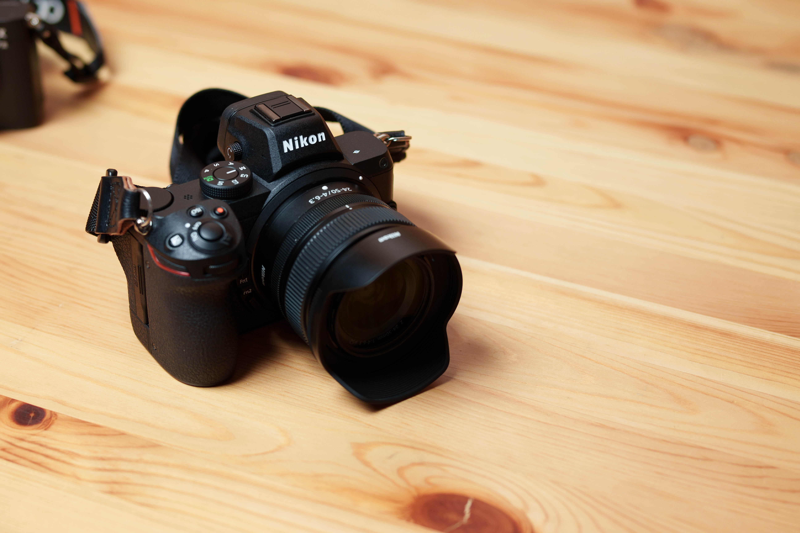
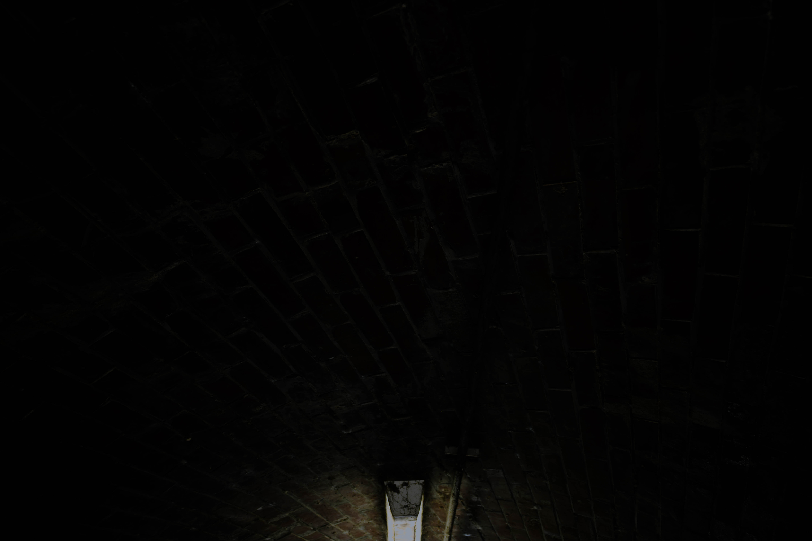
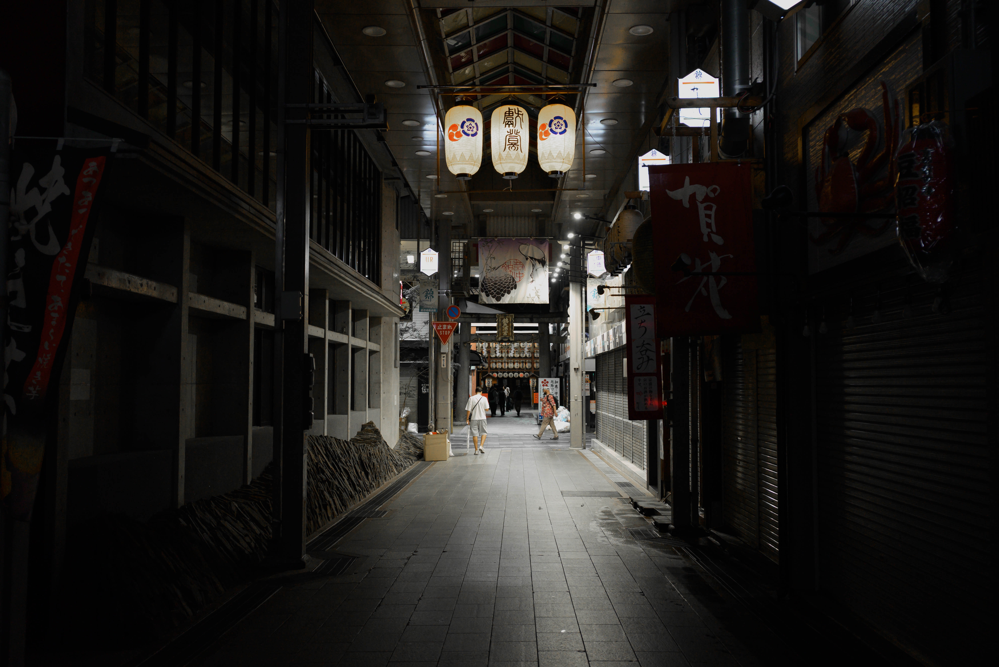
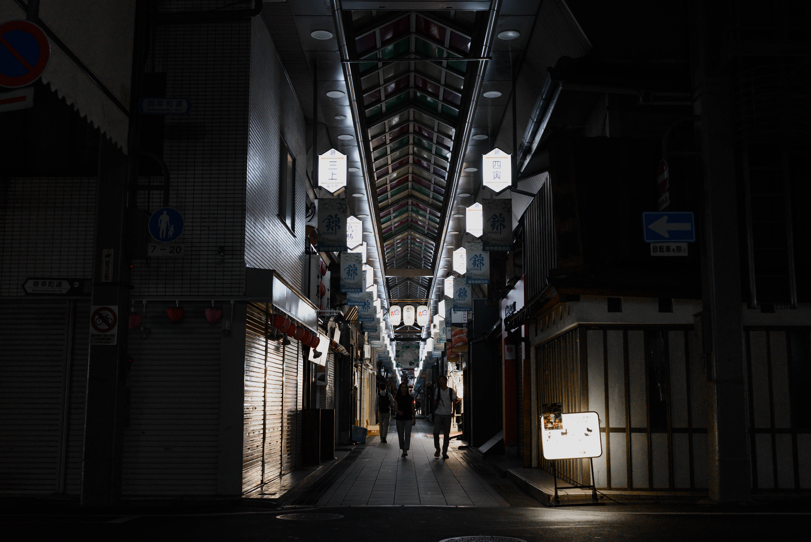
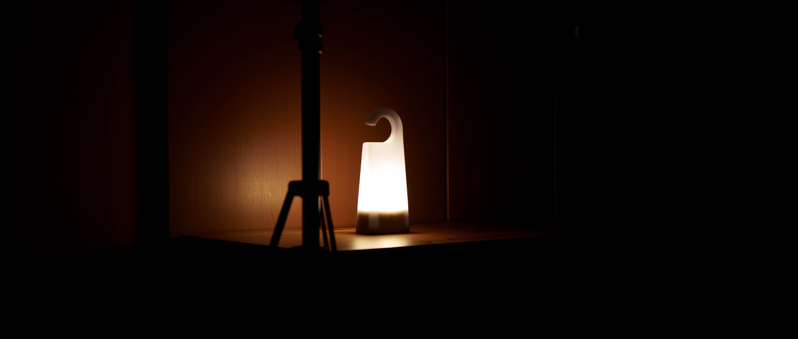
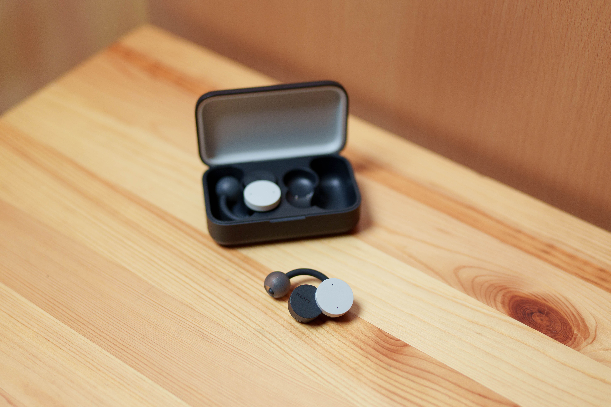
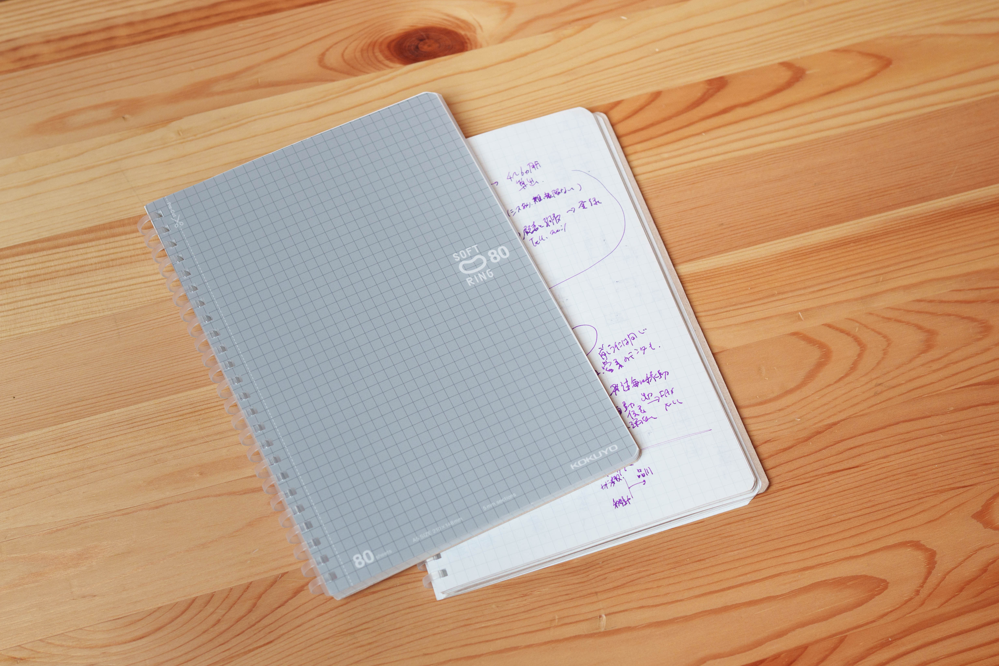
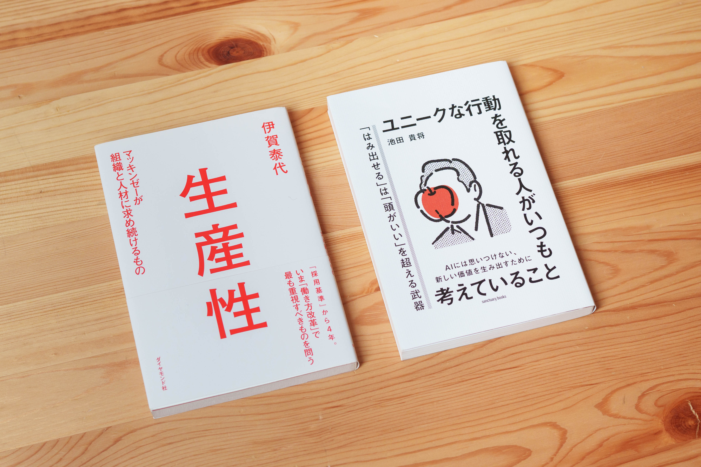

ブログから逃げるな！(えぇぇ？)
2025/07/19
ブログ...うぅ。
お久しぶr…あぶねっ
久しぶりとかいうとブログの頻度が予定より少ないってことになるので挨拶は変えときましょかね。
おはようございます（）
相変わらず「お疲れ様です」って言うのが嫌すぎて会社でも「こんにチハ〜」って言ってます、チャピオぺです。（誰）
ここ最近ブログ書きたいな〜って思いながら過ごしてたんですが、ブログってなんやかんや言語化作業でしかないので仕事外でもタイピングなんかしてたら終わりダヨって思って先延ばしにする日々でした。
正直仕事どうこうよりもブログ書いてないことに罪悪感があったというか、あぁやりたいことできてない！って毎日夜も寝つきが悪くて（割とホンマで草）アレだったのでやっとこさ書き始めました。
ちな今回はAI使わずやったので全てタイピング下ろしとなっております。
（本当はAI使ったんだけど…なんか「それ違う話題だよね？今やめてもらっていい？」とかいざこざがあったので諦めました。なんでやねんすぎる）
そして今回はトピックがバラバラとあるので好きなとこだけ読んでもらうのが良さげですね。言いたいこと溜まっとったさかいにな….
てことで次のトピック
- 直近の仕事の話（ぼっちウォウウォウ）
- コンサルとデザインの違い（お待たせしました）
- NIKON Z5使ってどうよ？
- おすすめアイテム、本
- うっすら考えてる将来のこと（参考にならんです。）
ここから面白そうなのだけつまみ食いしてください。
全部読んで15分とかかな？まぁ好きにどうぞです。
直近の仕事の話
結論から言うとボッチです。
えー今ニヤってしたあなた。知ってたwって思ったあなた。
えぇ！そうですよ！学生の頃と変わってないなポマエは！（CV：エレン）ですよ！
普通に聞いてほしいんだけど、なんか同期と同じプロジェクトだよ〜って聞いてたんだけど、いざプロジェクトやりまっせ〜って言った瞬間に「じゃあなたは別室で、」ってなってちゃんと先輩と１対１になってもうウッホホイですわ。
とかいう先輩との１対１もタスクとか業務の話オンリーでプライベートの話ゼロって感じで毎日がお仕事です（伝われ）。
まぁけどここは変に個人的な話しして無理に話題合わせたりする気まずい時間もないので自分としてはメリハリもあるしやってる感あって良いかなとは思ってます、今のところ。
なんやかんや自分より上の人と話すことが多いのは学生の頃から変わらずですが（相対的に多くなる）まぁ自分には合ってるんだろうなとか言い聞かせてやっとります。
それと前から言ってた給料泥棒の件、ぶっちゃけ今週はまだ泥棒だったなってのが所感です。
一応こういう内容の仕事するよ〜って聞いてるけどそれを始めるための環境用意ができてなかったり、そもそもその環境も自分で用意してね〜みたいな感じでえええぇえ〜〜〜なんでぇええ〜〜〜〜？？っていう１週間を過ごしておりました。
しまいにはタスク管理用のエクセルで関数作ったり表示ルールこねくり回して時間溶かしてスンマセーンってなってるくらいには泥棒でした。
自分なにやってんのぉって自問自答する日々です、はい。
あ、あとねガジェおじの話していい？
ガジェおじの話ってなんやねん、なんだけど。
これ業界あるある？なのかも知れんけど、IT業界って身の回りのガジェットがやたら増えるんすよ。
もちろんPC使うから直感的にもガジェ増えそうだなって思うけど、それにしても多いだろって！
あんまり言って良いのかわからんけど環境によってPC分けましょうとかもあるし、個人的なPC合わせるとこの部屋にPC数台あるってことになるんすよ…
ガジェおじは….避けたいね…マジでもの多くなるとダルいっす。
仕事の話はこんなもんですわね。まじイメージは修了展示会の時みたいに予定立てて作業して進捗報告してってのをちょっとカッチリやった感じのイメージです。
（アジェンダ用意して定例MTGやってとか、あれもなんとなくでやってたけど予習になってたんかね多分、知らんけど、割と。）
コンサルとデザインの違い
えーやっとこさ書きます。
一瞬リクエストあって書く書く詐欺してたこれ、ちょっと言語化もできそうだったので一旦書いてみようと思います。
まずコンサルとデザイン、そもそもこの２つが何してるかってのはググってください。僕も知りません。
それをある程度知ってる前提で今回話すのが、コンサルとデザインのマインドセットの違い、特にアウトプットとかその進め方らへんのお心待ちについてです。
結論から言うと余白の有無で、デザインには余白がある、コンサルには余白がないって感じになるかと思ってます。
ここで余白とかいうと資料のレイアウトの話かいな、って思われそうですが、まぁそれもあるっちゃありますね（後半で余裕があれば言及します）
まずタスクの進め方という意味での余白について、
例えば「このタスクやって下さい」ってなったとしましょう。タスク始めるにあたって色々とやることはあるかと思いますが、「作業日程だけ軽く先に共有しといて」って言われたらどうしますか？
僕の想像ベースで話すのであんまりあれですが、こういう時にデザインなら「〇〇までに初稿出します」でOKなんだろうけど、コンサルなら
「このタスクの工数はこれくらいで、タスクフローはこれだけあって、それぞれ進捗管理表に落とすとこんな感じになるので、今週分だとここまでできます、一旦ここでレビュー欲しいのでお願いしても良いですか？」
ってくらいまでブレイクダウンして、ってやります（浅はかな知識！）
まぁ要するにタスクは細分化する、例えば花柄を提案して下さいってなったら、なったら？（ここちゃんと例を示さないとブログっぽくないぞ自分。）
あ、あれかな。手順としては、スコープの確認（制作物の要件確認MTG：0.5H）→既存の花柄の調査（ピンタレストで情報収集：2H、MIRO上で収集情報のマトリクス化：2H）→モチーフにする花の選定（花図鑑の調達：0.5H、花図鑑を読む：1H）→…とかめっちゃ具体的にタスクフローを考えられないといけないんすよね。（ちなみに考えるのだるいのでやめました、はい）
要は行き当たりばったりとか、途中で発見がありました！みたいなことはほぼなくてどれだけ最初にタスクを想定できるか、それ通りに進められるかってのがコンサルなのかなと思うんですよ。
いやもちろんデザインでも先に粒度高くタスクフローを考えられてる方がいいんだけど実際みなさんどうですか？作業するときにフローって考えてるんですかね？
少なくとも学生の頃の自分はデザイン課題する時はとにかく動いてたみたいな感じで、全く真逆の進め方してましたね…反省反省。
しかもこれ、予定立ててるってことは最初に見積もった工数と違うってことも起きるってわけで、そんな日には「あ、これ予定より時間かかってる！アッ！でも今終わると中途半端！エッ！どうしよう！？」ってなってこの作業どこまで続けるか、どこでやめるかのトロッコ問題、いやトロトロトロッコ問題を常に解かされる気分です。合わない人にはまじ合わんと思う。
ほんでアウトプットも余白あるなしがあって、
例えばデザインだとアナロジーとかジャンピングフィッシュ（みなさん大好きだと思いますが）とかあるじゃないすか。これとかの全然違うところから引っ張ってきた考えで解決策できますやん、とか言ったらコンサルだと「は？」ってなると思いますよ、多分。
コンサルのアウトプットってまじでロジックが地続きって感じでどれ聞いても納得できる、納得できる反面に別にスタンディングオベーションが無いというかまぁそうっすよねってなる（おまいう）イメージですね。
これってデザインやってた時の「その発想すご、」とか「その考え持ってきたんかぁ、すげぇ」みたいなんがなくて、自分的にはデザインやってた時の楽しみってここら辺の余白というか、一見飛躍してそうだけど確かに効果的で納得感がある感じのアウトプットがあるってとこだと思ってたんで、改めてデザインええな〜ってのと自分の環境に慣れないとなぁとも思う次第です。
ここまで言うとコンサルってガチガチでおもんないって思われそうですがそんなこともなくて、ここまで細分化して物事考えるってのもそれはそれですごくて楽しいし、むしろデザインの人がこの考え方持ってたらつよつよなのではって思うくらいなので皆さんには関係ないかも知れないが決して本当に退屈ってわけでもないよって一応言っておきます。
ちなーみに、自分にはどっちが合ってそうかで言うと普通にコンサルかなぁ。
少し悔しい感じもあるが余白を掻き回すことは今のところ得意でもなさそうなので、こっち側寄りで頑張るのが良いのかなって思うております。
これくらいかな！
初手コンサル目指す人がどれくらいいるか知らんがまぁ参考になればって感じです。
（ブログの後半でコンサル関係の本は紹介するので、こういう考え方気になるって人はそれ読んでみるといいかなとか）
NIKON Z5使ってどうよ？
きたわね、本業の話（今すぐクビになれ）
SONYユーザーがNIKON買ったよってのが先週？くらいの話です。
結論から言うと、NIKON Z5は「重い」「遅い」「シャドウ階調よき」って具合です（ニコンに謝れ）
やや少し弁解させて欲しいのは、あくまでSONY機（7Ⅲ、6700）と比べてって具合なので決してNIKON Z5単体で文句があるって訳じゃないです。や、ないこともないんだけど。
重さで言うと、これはSONY機が軽すぎるだけですね。別にNIKONもスペック上は重量あるけど使用上は別に気にならんかな。気にならんけどSONY機に戻ったときに「かるぅ〜」ってなっちゃうぐらいには重いです。
遅いってのも同じでSONY比で動作がもっさりしてるのはそう。てか7Ⅲがおかしいんだよなぁ…10年前くらいのカメラなのに操作も別に文句ないしAFなんかもう、ってかZ5のAFは遅いです、はい。
さりげなくディスったがとにかく値段が値段なのでそこらへんのレスポンスは捨てたってのがあれでしょうね。
ここまで落としてきてじゃぁなんでつこてんねんっていう理由が「ニコンのレンズが使える」ってのと「シャドウ階調がいい」の部分です。
前者は言うまでもないが、ニコンはなんと言ってもレンズに関しては安くてもいいの作るってので評判なのでその恩恵を受けられるのはメリットですね。特にこの2450はいいね。ちっさい割に（他社比だとでかいよ。）周辺も流れないし、必要最大限写る。
そしてレンズに関係してることでもあるが、シャドウの階調がいいんすよね、Z5さん。
例えば7Ⅲで現像してると暗い部分の表情見せたいって思ってもどうしても沈んでしまうというか、うっすら見せるみたいなことができない気がしてて、それがZ5だとちゃんと顔が見える、あ〜ここにこれがあるんねぁってなる現像ができる気がします（感想だよ、個人の）
  NIKON Z5 + Z2450で撮影（唐突参考画像）
こういうレスポンスが遅かったりシャドウ撮っても色々いじれるとなると撮るものが変わるというか、今まで見てなかった暗いところもゆーっくり向き合って撮るようになりましたね。
念のため断っておくと、遅いことはデメリットではあるので「遅いからこそ良い」とかは言うつもりはないです。事実としてスタイルが変えられてしまっただけで、いいことではないっす。
これくらいが所感です。
ダメなとこしか言ってないけど個人的にはスチル使いだと必要最大限というかファインダーもでかいらしいし、スナップ用途なら別に遅くても耐えかなって思うので今のところは2450と合わせて気に入っております。使い分けていこうねカメラ。
おすすめアイテム
え〜ここまで書くと疲れてきたのでここら辺は適当にしますか…あんたにおすすめされましてもって感じですよね。僕もインスタのおすすめ系投稿はそういう目で見てるので分かりますはい。
- 無印のライト
持ち運びはもちろんドアノブに掛けておけるライト。ドアノブに掛けるときにドアとぶつかって音がしてうるさいのでドアノブに掛けて使うことはない。オススメする人としては寝る前に本読む人とか部屋の電気をリモコンで消せない人とかいいかなと思います。充電ドッグから持ち上げたらライトが点灯するのでボタン押したりとかなくてそこは好き。一方で消すときはボタン押さなあかんし逆にドッグに乗せたら消えるとかもないので、まぁ持ちやすい形やし停電時にいいらしいし使ってる。今は在庫ないかもです。
- 無印のルームフレグランススプレー
引きこもり時間が多く同じ時間同じ部屋で同じ匂いだと発狂してしまう人にはオススメ。別の置き型フレグランスもあるがあれは自分の小さい部屋に対しては匂いが強いのでオススメしたいけどぶっちゃけ使い方が掴めずってのが本音。同じ境遇の人にがいたら参考にして下さい。意外と匂いで気分変わるというかスプレー押すって作業でなんか気分変わる気がするのでいいですよ。
- nwmイヤホン（オーブンイヤーイヤホン）
最近よく見る周辺の音も聞こえるし音漏れも少ないイヤホン。音質求める人には合わないかもしれないけどあと数十年生きる上で耳のこと大切に思ってる人は今すぐ買ったほうがいい。優先とワイヤレス両方使ってて今のところ気に入ってるし可愛いのでヘッドホンも買いたいなぁとは思ってる。使わないけど。
- コクヨのソフトリングノート
もっと早く知りたかった。手書き好きなので手帳使ってたが予定表埋めるの無理すぎて結局フリーノートを使いますってときに出会ってから愛用してます。なんせ表紙もグレーだしページも捲りやすいし切り離したりできたりでなんかちょっと書きたいってなったときに使う。ちなみに最近はデジタルでメモすることも増えて使ってないし、なんなら切り離して使ってことなどない。
こんくらいかしら。リモワにまだ慣れてないし環境もまだよくなりそうではあるものの物増やすのはだるいので一旦ステイしてる次第です。
こっからは本です。研修期間アホみたいに読書したんでそん中から本でも紹介しようかなと。
おすすめ本
- 生産性
コンサルなら読んでないとか、この知識がないのはおかしいですって言っても過言じゃない内容。「生産性」ってなんだっけを一から丁寧に説明してくれててこの部分も有益ではあるんですが、特に意思決定のロジックの話とかは知ってからものの見方が変わったのでここの部分だけでも読んだ方がいいっす、読みたくないって人は会った時に熱弁するので覚悟してもろて。多分デザインの畑にいたら読むことないかもだがこの考えを持てたら最強かも。
- ユニークな行動をとれる人がいつも考えていること
ユニークって言うとなんじゃらほいって思われるかもだけど、ここでのユニークってのはざっくり言うと自分で意思決定しててなおかつその選択も周りから見たら羨ましそうに見えるみたいな感じですかね（詳しくは読んでください）。結構マインドセットに近い話だけど、どう考えたらなんかいい感じに行くんだっけみたいな内容が小さいトピックに分かれてて日常にも取り入れやすく再現性としてもGOODなのでおススメです。目標設定なんておもちゃだよねみたいな話もあって社会人あるあるの目標設定しようねぇハラスメントとも上手くやってけるようになった本。
今回の物撮りあんましっくりきてないです（←言い訳する前に撮り直そうね◎）
他にもあるにはあるが説明長くなるので割愛だけど時間術系、お金系、目標設定系、でオススメな本はあるので興味があれば（こういうとき大抵ない）聞いてください。あ、「スタンフォード式リーダーシップ」は万人にオススメなので一旦読みましょう。僕にはリーダーシップとか関係ないですって人ほど意味ある、逆に。
うっすら考えている将来のこと
これが最後のトピックということは特に個人的なネタで万人には読まれないだろうと思ってるってことなので読むのも途中で放棄されてもいいトピックです（嘘です思いついた順に書いてたらこうなりました）
あ、一応言っておくと「将来」とは言ってるがどっちかというとどんな働き方？過ごし方？したいか的なニュアンスが強いです。
まぁとにかく働いてというか、まだそこまで働いてないのであれなんでけど、
実際会社に入った今どう考えてますか？って話をしたいと思います。
結論から言うと（マタ結論からデスヨ...）入社前に考えてたことなんて半分くらいしか当てになんなかったよってのが一番です！
自分の場合だと社会人だから残業とか全然ウェルカムだなぁとか、やっぱ社会人なら出社多い方がいいかな〜とか思ってたけどいざ働いてみると違ったというか。
それこそ残業なんか逆だもんね。いかに業務時間内で効率よく進めて残業しないようにタスクを管理するかに必死になってるし、出社もまぁ仕事してる感はあるけど言っても移動時間もあるしその分の体力の消費もあるわけで意外とオンラインでいいなぁとか思うこともあるし。
それにリモートってサボってしまうとか聞いたことあるけど真逆で、部屋にゆっくりできる要素なんてないし休憩取るの忘れてしまうくらい業務に没頭しててなんなら時間足りないし。
自己分析してたらある程度はわかる要素もあるだろうけど例えば仕事にもよるし、会社の文化によっては同じ方式でも合わないとかあるしまぁ皆さんに言いたいのは今どれだけ悩んでても言うて半分くらいは当てになんないからとりあえず基準を得るためにもどっか選んだらって思うよ〜って感じです
（それこそ「ユニークな行動をとれる人がいつも考えていること」の本であった話ですね。結局目標とか将来のことって決めようにも決めらん無いのがほとんどなので叶う叶わない関係なく一旦決めちゃって軌道修正していくのでいいんちゃうかなとか。てか知り合いのほとんどはデザインというやりたいことあるはずなんで役に立たないんですがこの話。てかこのカッコ内長すぎ、本文にかきなよ。）
ほんで働いてるとやっぱこういう要素があると合ってるなってのも見えてきて、自分だと「飽きない（≒簡単じゃない、新しい学びあり）」「周りのモチベが高い環境」「睡眠とれる」あたりはマストですね。寝るために生きていると言っても過言ではないですから人間。
そういう意味では今アサインされたPJTにも、先輩にも恵まれてて、ろくに企業分析とか他に内定あってちゃんと選んだとかじゃない割にはマッチした環境に入れてるなってのがまじ率直な感想です。今のところはね（今後変わる可能性があるという保険）
まぁ本当の意味での将来はまだフワッフワだけど今のところはコンサルとして、それもデザイナーに次いで胡散臭い職業名でやっていこうと思いますので何卒よろしくお願いします。
以上！
平日仕事すればするほど週末にそこら辺の港町行って写真撮ったりゆっくりしたくなるね。
そんなことを思う毎日です。